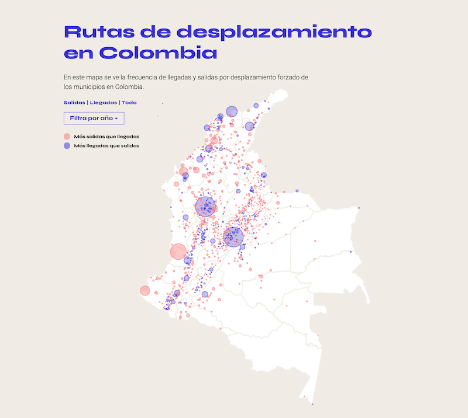
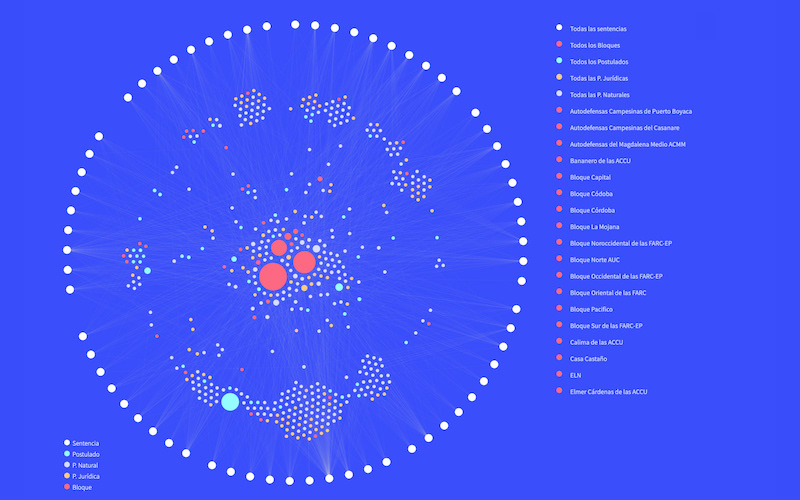
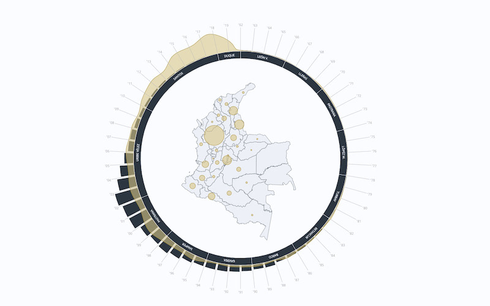
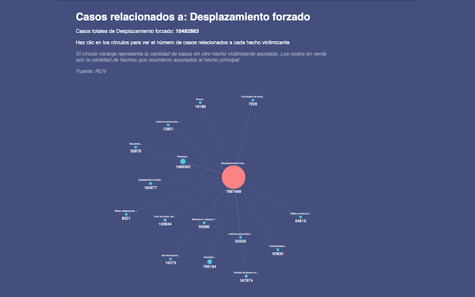
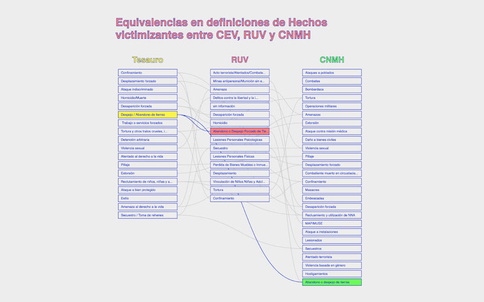

Data visualizations about the Colombian armed conflict for Comisión de La Verdad de Colombia.
I created a series of interactive web visualizations using React.js, D3.js, ElasticSearch and R. These visualizations where used by researchers to understand and promote recognition of the recent history of violence in Colombia.
Checkout the Github repository




